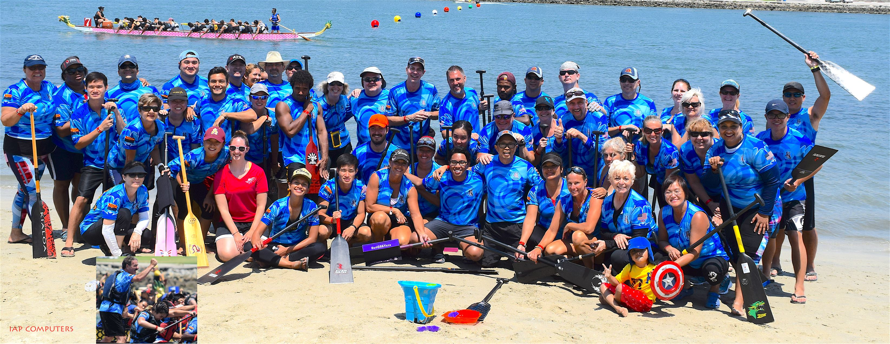
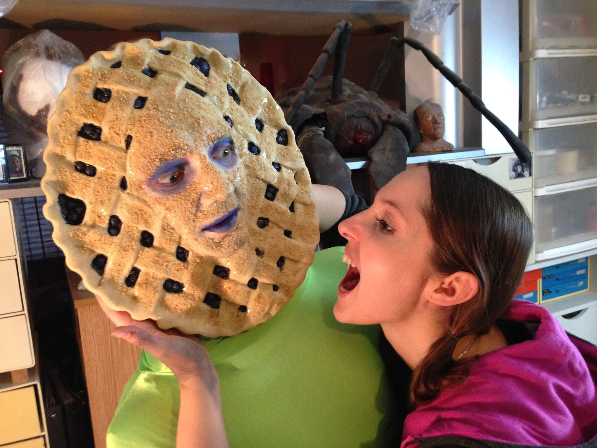
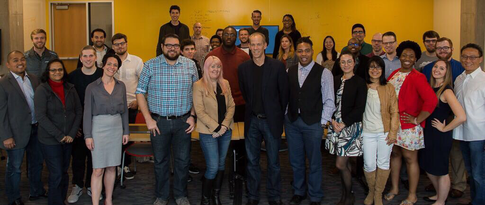

First and foremost, thank you for visiting my website! I hope you see something here that inspires you in some way. My name is Nicki and I absolutely love programming. I’m a little quirky, a lot bubbly, and obsessed with learning new things and meeting new people.
I tend to collect hobbies and pour myself into them. I’ve been a member of a Dragon Boat team, where
in 6 months I went from being a total noob to being the lead stroke in competitions.

I started a small film production company called Jump Ship Productions
and went on to win dozens of awards like best sci-fi at the Phoenix Comicon in 2013. I even learned how to construct a mold to mass
produce masks that would turn an actor into a talking pie for a film.

When I make up my mind to do something, I put everything
I have into it and do it right.
In 2015 I stumbled upon the HTML and CSS classes on Khan Academy and decided to give it a try. I was absolutely hooked. I did online courses here and there, but wasn’t sure where to start to get myself prepared for an actual career.
In the summer of 2017, after conducting a ton of research, I signed up for a 24 week coding bootcamp
through the University of Arizona. I thought I loved programming before I started this class, but I had no clue that it would
truly become my life’s passion.

I worked hard every day, and excelled enough that my instructor and student success manager
both submitted my name with high recommendations to be a TA for the next coming semester. I am proud to say that I was offered the position
and will be spending the first half of 2018 enriching the minds of the next generation of programmers.